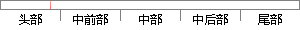

第三章将深度神经网络模型运用到了双站时差频差定位体制中，首先介绍了BP神经网络模型的运算流程，然后详细推导了反向传播算法，分析了BP神经网络算法的不足之处，并由此引出了深度神经网络模型，继而简要介绍了深度神经网络中常用的几种正则化和优化方法，最后对该算法进行了仿真建模，与传统的解方程定位方法进行了对比，验证了该模型算法的有效性。
片段位置图

相似结果|
1
原句片段：算法进行了仿真建模，与传统的解方程定位方法进行了对比，验证了该模型算法的有效性。
相似片段 1：DPD 算法将参数估计与位置解算融合到一个模型当中, 避免了传统定位方法中因两...了分析讨 论,并与传统的算法进行了对比,最后通过仿真验证 了本文算法的有效性...
相似片段 2：验证算法的有效性 本文对提出的算法进行了对比仿真...在不宜进行试验的场合 机理分析建模是一条比较可行...方程参数的求解、模型结构的选择与验证、误差评价标准...
2
原句片段：深度神经网络模型，继而简要介绍了深度神经网络中常用的几种正则化和优化方法，最后对该
相似片段 1：神经网络等深度模型在各种复杂的任务中表现十分...及其变体是深度神经网络中常用的调整方法。本...这些问题,近年来研究者开发了多种正则化和优化...
相似片段 2：卷积神经网络CNN与深度学习常用框架的介绍与使用 ...正则化方式是在loss中加上所有的W,但在神经网络中...都关掉一部分感知器 , 得到一个新模型 , 最后做...
相似片段 3：中的技巧、激活函数的选择、不同正则化方法、来自于数据的洞察、集成多个深度...以下是几种常用的方通过控制模型的容量来阻止?神经网络?的过拟合(Over...
|
※ 片段修改建议 ※
近似词参考：- 模型：模子
- 运用：应用
- 体制：体系体例
- 首先：起首
- 介绍：先容
- 模型：模子
- 详细：具体 细致
- 传播：传布 流传
- 分析：阐发 阐明 剖析
- 模型：模子
- 简要：扼要
- 介绍：先容
- 常用：经常使用
- 方法：方式 要领 法子
- 最后：末了
- 方法：方式 要领 法子
- 对比：对照 比较 比拟
- 模型：模子
系统自动生成语句：第三章将深度神经网络模子应用到了双站时差频差定位体系体例中，起首先容了BP神经网络模子的运算流程，然后具体推导了反向传布算法，阐发了BP神经网络算法的不足之处，并由此引出了深度神经网络模子，继而扼要先容了深度神经网络中经常使用的几种正则化和优化方式，末了对该算法进行了仿真建模，与传统的解方程定位方式进行了对照，验证了该模子算法的有效性。
注：本片段修改建议为系统自动生成，仅供参考。